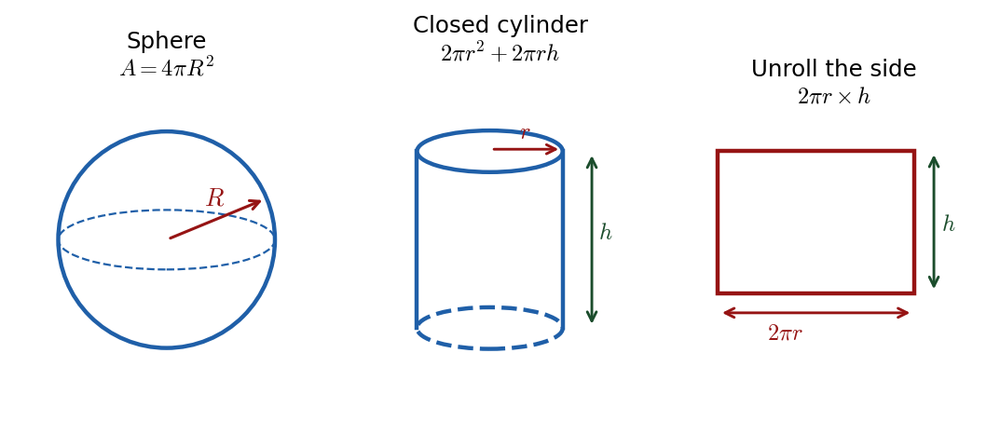

Harry → Phuc • 11 July 2026 tutorial
ESAT — board-read (not official WMA13)ESAT warm-up: sphere surface area = 10 closed cylinders

Sphere \(4\pi R^2\); closed cylinder \(2\pi r^2+2\pi r h\) (two ends + curved side unrolled to a \(2\pi r\times h\) rectangle).
Part (a) · Formulae to fix first3 steps
Hide workingStrategy
A closed cylinder has
two flat circular ends plus one curved side; a sphere has a single curved outer surface. Write each surface area before substituting.
Formula
\[ \text{sphere: } A=4\pi R^{2},\qquad \text{closed cylinder: } A=2\pi r^{2}+2\pi r h. \]
Substitute / derive the curved part
The two ends give \(2\times\pi r^{2}=2\pi r^{2}\). Unrolling the curved side gives a rectangle of height \(h\) and width equal to the circumference \(2\pi r\), so its area is \(2\pi r\times h = 2\pi r h\).
Sense check
\(\pi r^{2}h\) is the
volume of a cylinder, not its surface area — keep the two ideas separate.
Phuc's slips (recorded): Phuc first drew a cylinder when asked for the sphere ("I wrote the wrong one"), gave the circle area as "\(\pi\) multiplied by \(r\)" (\(\pi r\)), and called the unrolled length the "diameter". Harry corrected each: "Pi \(r\) squared… don't forget the square", and the unrolled width is the circumference \(2\pi r\).
Part (b) · Set up the word equation2 steps
Carry-inSphere surface area \(=4\pi R^{2}\); one closed cylinder \(=2\pi r^{2}+2\pi r h\); given \(h=4R\).
Hide workingStrategy
Translate the sentence directly: sphere surface area equals ten times one cylinder’s surface area.
Substitute
\[ 4\pi R^{2}=10\bigl(2\pi r^{2}+2\pi r h\bigr). \]
Sense check
Both sides are areas (units of length\(^2\)); the factor 10 multiplies one whole cylinder, including
both ends.
Phuc's slip (recorded): Phuc first wrote \(4\pi R^{2}=10(\pi r^{2}+2\pi r h)\) with only one circular end. A closed cylinder has two ends, so the bracket is \(2\pi r^{2}+2\pi r h\).
Part (c) · Substitute \(h=4R\) and solve4 steps
Carry-inEquation: \(4\pi R^{2}=10\bigl(2\pi r^{2}+2\pi r h\bigr)\); substitute \(h=4R\).
Hide workingSubstitute \(h=4R\)
\[ 4\pi R^{2}=10\bigl(2\pi r^{2}+2\pi r(4R)\bigr)=20\pi r^{2}+80\pi rR. \]
Simplify to a quadratic in \(R\)
Divide throughout by \(4\pi\): \(R^{2}=5r^{2}+20rR\), so \[ R^{2}-20rR-5r^{2}=0. \]
Formula · quadratic in \(R\)
With \(a=1,\ b=-20r,\ c=-5r^{2}\): \[ R=\frac{20r\pm\sqrt{400r^{2}+20r^{2}}}{2}=\frac{20r\pm\sqrt{420r^{2}}}{2}=10r\pm r\sqrt{105}. \]
Result · keep the positive root
A radius is positive, so take the \(+\) root:
\( R=r\bigl(10+\sqrt{105}\bigr) \)
Sense check
\(\sqrt{420}=\sqrt{4\cdot105}=2\sqrt{105}\), and \(10+\sqrt{105}\approx20.2>0\); the negative root \(10-\sqrt{105}<0\) is rejected.
Match on the day: The board's lettered options were garbled in the recording. Compute \(R=r(10+\sqrt{105})\) yourself and select whichever option shows that value; do not trust the transcribed option list.